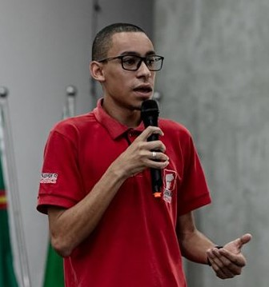

E-mail: luizfelipe1342@yahoo.com.br
Telefone: (11) 96218-8482
Sou comunicativo e trabalho bem em equipe, estou constantemente procurando contato para troca de ideias afim de melhorar minhas habilidades e também para ajudar o próximo. Me atento a atividades bem estruturadas e com objetividade no resultado. Aprender e evoluir estão constantemente no meu vocabulário.
Formado em Jogos Digitais, desenvolvo games 2D e também 3D em diversas plataformas. Já participei de projetos acadêmicos nos quais envolvem Realidade Virtual, Aumentada e Mista, como também trabalhei com sonoplastia na Global Game Jam e participação em dublagem para jogo produzido na FATEC de Carapicuíba.
Ensino Superior – Desenvolvimento de Jogos Digitais – FATEC Carapicuíba – Concluído em Dez/2017
Técnico em Informática – ETEC Uirapuru - Completo
Global Game Jam – “Shadow Rhythm” – Web – Sonoplastia
TCC Fatec Carapicuíba – “Uso de Realidade Aumenta/Virtual e Mista para Jogos Físicos” – Unity – Realidade Aumentada (Targets).
Conhecimento nas tecnologias: Python, HTML, CSS, JavaScript, C# , Unity.
Experiência com desenvolvimento de games na Unity 2D, Construct, GameMaker
Experiência com ferramentas de Design como Illustrator e Photoshop
Marketing Digital – G-Saúde – 2016/2017
Professor de Games e Robótica – SuperGeeks – Janeiro 2018/Atualmente
Inglês: Pré-Intermediário